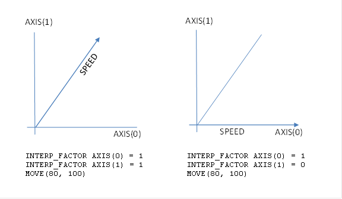

Axis Parameter
This parameter excludes the axis from the interpolated motion calculations so that it will become a following axis. This means that you can create an interpolated XY move with Z completing its movement at the same time. The interpolated speed is calculated using any axes that have INTERP_FACTOR of 1, so at least one axis must be enabled and have a distance in the motion command otherwise the calculated speed will be zero and the command will complete immediately with no movement.
The following two graphs illustrate how the SPEED is resolved along the path when both axes have an INTERP_FACTOR of 1, and how SPEED is resolved along the X axis when the Y axis has an INTERP_FACTOR of 0.

INTERP_FACTOR only operates with
MOVE
,
MOVEABS
and
MHELICAL
(on
the 3
rd axis) and their SP versions. All other motion commands
require interpolated axes and so ignore this parameter.
It is required to move a Z axis interpolated with X and Y, however we want the interpolated speed to only be active on the XY move. We disable the Z axis from the interpolation group using INTERP_FACTOR. Remember when the movement is complete you must enable INTERP_FACTOR again.
INTERP_FACTOR AXIS(2) = 0
'Perform movement
BASE(0, 1, 2)
MOVEABS(x_offset, y_offset, z_offset)
WAIT IDLE
INTERP_FACTOR AXIS(2) = 1
MOVE , MOVEABS , MHELICAL , SPEED , AXIS